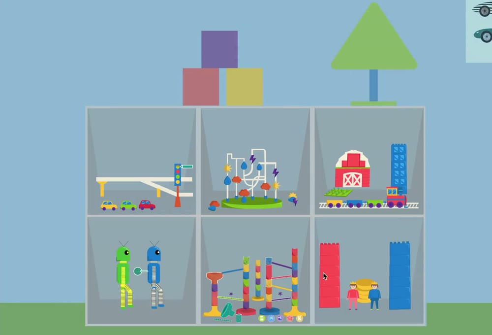
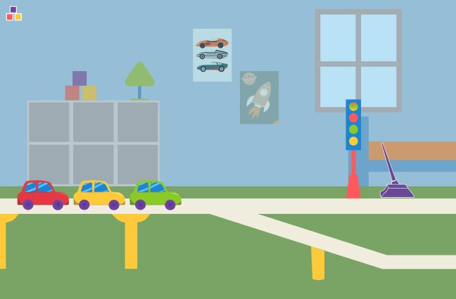
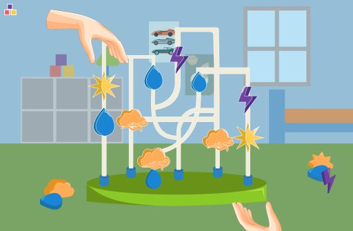
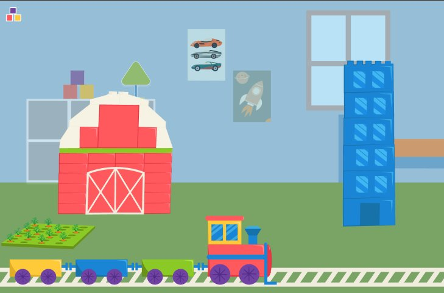
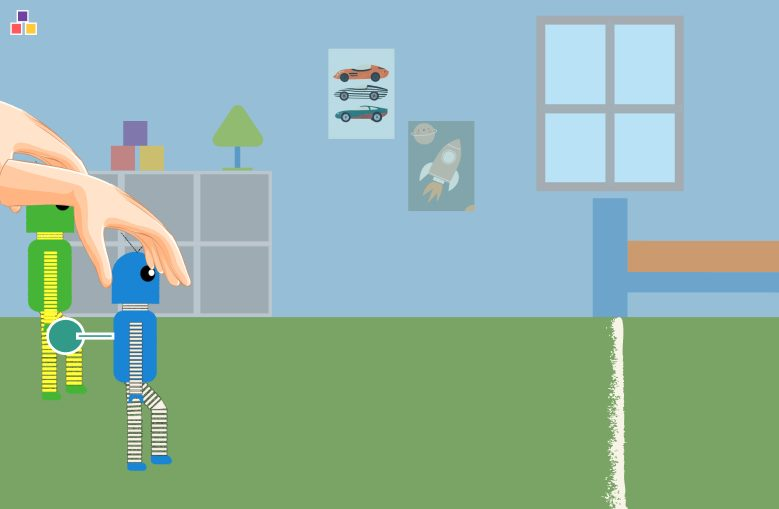
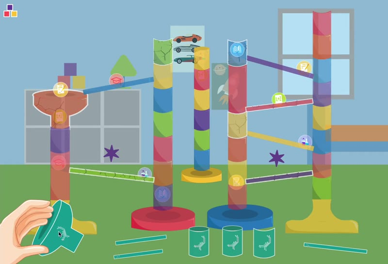
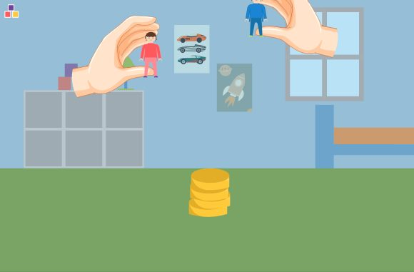

Multimedia Design Workshop 4 · 2025
Interactive Infographic
Six concepts about complex systems, explained with toys and minigames, without a single word on screen.
Project details
- Project
- Interactive Infographic
- Context
- Multimedia Design Workshop 4 · UNLP · 2025
- Team
- 5 people
- Tech
- Java → p5.js
The brief
Design a dynamic, interactive infographic that explains a group of concepts about complex systems, with its own visual and sound aesthetic and its own interaction logic, using rhetorical devices to represent each idea.
To get there, we dissected each phrase: we looked up the definition of every word and kept rephrasing it until we understood the idea. Only then did we choose a theme to tie the six concepts together: toys.
Our answer: a kid's room where the shelf is the menu and each toy opens a minigame that represents a concept. There's no text: you understand the idea by playing, and the hand shows what you can grab.
My role: I designed 1 of the games and programmed 5 of the 6. I first programmed them in Java and then ported them to p5.js.

Six concepts, six toys





